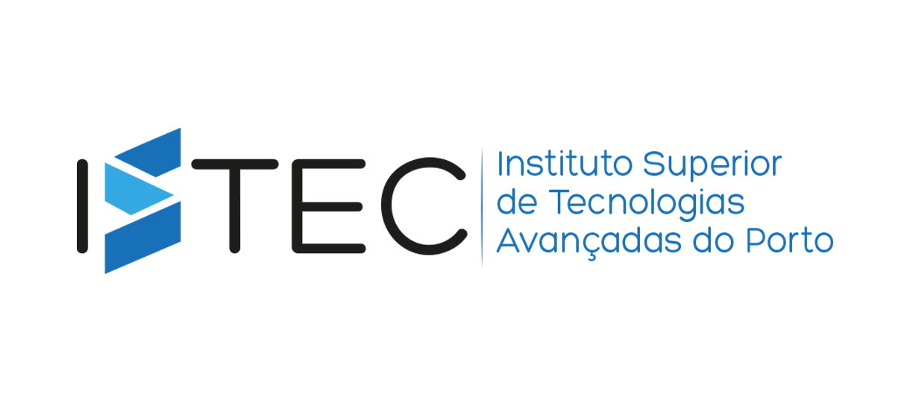
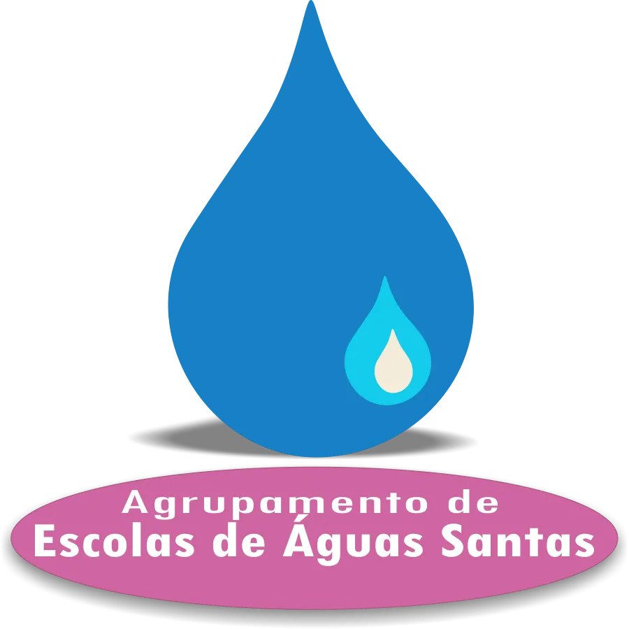
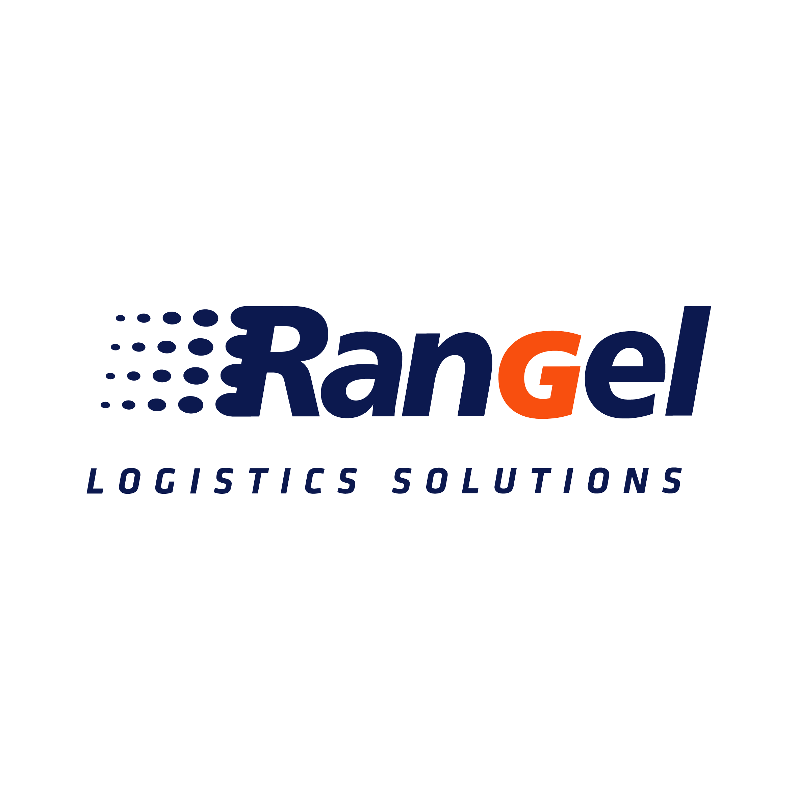

Olá! O meu nome é Leonardo Oliveira e sou estudante de Engenharia Informática no ISTEC Porto. Desde do 8º ano que sinto uma enorme enorme paixão pelo mundo da tecnologia, pela programação e pela criação de softwares que facilitem o dia a dia dos utilizadores.
Ao longo do meu percurso académico e pessoal, tenho focado os meus esforços em dominar ferramentas de desenvolvimento web como HTML, CSS e JavaScript, além de explorar linguagens de programação como PHP e Python. O meu objetivo é fundir a vertente técnica com a criatividade visual para construir plataformas funcionais, modernas e com uma excelente experiência de utilização (UX/UI).
Atualmente, encaro este e-Portfolio não apenas como um arquivo de trabalhos, mas sim como um reflexo da minha evolução, dedicação e capacidade de adaptação aos novos desafios do setor informático. Estou sempre motivado para aprender novas tecnologias e colaborar em projetos inovadores.

ISTEC Porto - Instituto Superior de Tecnologias Avançadas do Porto
ISTEC Porto - Instituto Superior de Tecnologias Avançadas do Porto

Agrupamento Escolas Aguas Santas, Maia
Átomo Misterioso, Unipessoal, Lda

Rangel Logistics Solutions